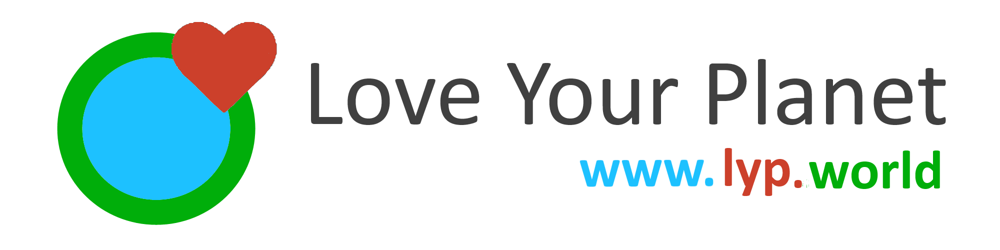

Tamika Burgess-Rose
Information Technology Professional
Digital Forensics Analyst in training at British Columbia Institute of Technology (BCIT)
Trained Software Systems Developer with hands on experience with current technologies and programming languages
Featured Projects
Team Lead – LYP-World
BCIT – Industry Client Project (Apr 2020 - May 2020)
Developed the prototype social media platform for Love Your Planet, a dedicated environment for individuals and groups who share a common interest in preserving our planet, to connect, conceptualize and plan their unique contributions in achieving a common goal.
- Using MERN Stack JS, implemented Node.js with Express & MongoDB back-end and React frontend to create a functional and easy to use social media platform.
- Developed the Individual and Group Pages and Newsfeeds, which allows the users to make posts and comments to each other’s pages.
Simple Portfolio API
Personal Project (May 2020)

Developed a secure CRUD Node.js, Express and Mongo API, documented using Swagger-JSDocs.
- Demonstrates how to use Swagger-JSDocs to autogenerate Open API Specification (OAS Version 3.0.3) documentation.
- Ability to use Swagger-UI-Express to test multiple endpoints
My Island Home
BCIT – Internal Project (Oct 2019)
Developed a 3-page website using HTML/CSS and JavaScript after completing Systems Foundations Module.
- Demonstrate understanding of Website developments.
- Technologies Used: HTML5, CSS3 and JavaScript
CIBC FirstCaribbean's Corporate Online Banking
CIBC FCIB – Internal Project (2019)
As CIBC FirstCaribbean's Oversight Test Manager, I worked closely with the project managers from CIBC (Canada) and Jonah's Group (Canada) as well as the development teams (Barbados & India).
- Managed the successful end user testing and implementation of Epics 1 – 4 to the production environment
- Responsible for 3 remote Test Engineers from NTT Data(Canada)
- Technologies used:
- Test Automation: Robot Framework with Selenium, Jenkins
- Project Management: JIRA
Jamaica Credit Bureau Project – Phase 2
CIBC FCIB – Internal Project (2017 - 2018)
The 3 main objectives for Phase 2 of the project was to:
- Determine root cause of rejection of 72% of data transferred to CreditInfo
- Develop Extraction, Load and Transmission process(ETL) for the Credit Card data to CreditInfo, one of two approved bureaus in Jamaica at the time
- Develop Extraction, Load and Transmission process(ETL) for the Bank Accounts and Credit Card data to CRIF Information Bureau, the second approved bureau in Jamaica at the time
As Test Lead for the initiative, I was:
- Responsible for the 99% reduction of errors in data transmission reported by both credit bureaus, which increased customer confidence in data integrity.
- At the recommendation of the Project Manager, Joy Fearon, the recipient of the HR Star Achievers’ Spot Award for exemplary contribution to the Jamaica Credit Bureau project
- Technologies used: ETL Processing, SFTP, Data Validation